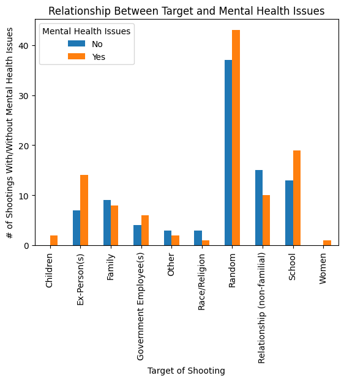

An Evaluation of Shootings in the United States
Jonathan Morgan
Spring 2024 Data Science Project
Introduction:
Over the past decade shootings have only increased. This has become a very big issue in the United States, and has had a profound impact on many individuals and the country as a whole. There are many different opinions on what a proper solution is, such as banning guns completelty, investing into more extensive background checks, or putting more focus on mental health. While a solution is being argued over, shootings still occur regularly with no change. In this project I am not seeking a solution, but instead seeking to find valuable insights and trends regarding what qualities are common among most active shooters, race, genger, mental health, etc. This data will assist in finding a solution because it provides valuable information about what exactly “makes” an active shooter. Knowing this can help pinpoint which direction a possible solution to this issue should point.
Sections:
Data Curation:
We will be using Google Colab for this tutorial. It is provides use with free acces to computing resources that are well suited for data science and machine learning. Follow this link to learn more about the service if you don't, or to get a feel for the UI and tools before continuing. Once you've done that create a new Colab and name it whatever you'd like.
These are all the imports we will be using in this tutorial, add them to your Colab and run the cell:
import pandas as pd
import matplotlib.pyplot as plt
import numpy as np
from scipy.stats import chi2_contingency
from scipy.stats import mannwhitneyu
from scipy.stats import kruskal
import statsmodels.api as sm
Gathering Data:
First we need to gather data shootings in the United States. This data needs to contain a decent amount of information about the shooting as well as the shooter so that we can have more data to work with later on. I was able to find pretty good data set on Kaggle that contains data on US shootings for the past 50 years. Follow this link to download the data and add it to your Colab. We specifically only want Dataset Ver 5, so only include that one.
After you've done that we need to run the following in order to create a dataframe with our csv file:
mass_shootings_5 = pd.read_csv('Mass Shootings Dataset Ver 5.csv', encoding='cp1252')
If you run
mass_shootings_5.head(10) your
data frame should look like this:

There are many columns that we don't need or want because they don't have enough entries or because they aren't useful to us. Execute the following in order to get rid of them:
mass_shootings_5 = mass_shootings_5.drop(columns=['Title', 'S#',
'Incident Area', 'Summary', 'Fatalities', 'Injured', 'Age', 'Employeed
(Y/N)', 'Employed at', 'Latitude', 'Longitude'])
Now we need to edit some of our columns because the data in them isn't properly formatted. The "location" column includes the city, which we don't really care for, so we need remove it, and the "target" and "cause" columns vary too much in their categories so we need to condense them into more broad categories.
In order to do this I have created the following three functions:
def remove_city(location):
if str(location) != 'nan':
splitted_loc = location.split()
if splitted_loc[-2] in ['New', 'North', 'Rhode', 'South', 'West']:
state = splitted_loc[-2] + ' ' + splitted_loc[-1]
else:
state = splitted_loc[-1]
return state
def fix_target(target):
target = str(target).lower()
if target != 'nan':
if ('ex-' in target):
target = 'Ex-Person(s)'
elif (('teacher' in target) | ('student' in target) | ('teachers' in target) | ('students' in target) | ('school' in target)):
target = 'School'
elif ('child' in target):
target = 'Children'
elif (('congress' in target) | ('police' in target) | ('council' in target) | ('social worker' in target) | ('tsa' in target) | ('marine' in target)):
target = 'Government Employee(s)'
elif (('coworker' in target) | ('friend' in target) | ('neighbor' in target) | ('guest' in target) | ('employee' in target)):
target = 'Relationship (non-familial)'
elif ('family' in target):
target = 'Family'
elif ('random' in target):
target = 'Random'
elif ('women' in target):
target = 'Women'
elif (('black' in target) | ('white' in target) | ('sikhs' in target) | ('monk' in target) | ('pray' in target)):
target = 'Race/Religion'
else:
target = 'Other'
return target
def fix_cause(cause):
cause = str(cause).lower()
if ('frustration' == cause):
cause = 'anger'
elif ('nan' == cause):
cause = 'unknown'
elif (('domestic' in cause) | ('breakup' == cause)):
cause = 'domestic'
elif (('exam' in cause) | ('suspension' == cause)):
cause = 'school'
return cause
Add these functions to your collab and run the following in order to fix the columns:
mass_shootings_5['Location'] = mass_shootings_5['Location'].apply(remove_city)
mass_shootings_5['Target'] = mass_shootings_5['Target'].apply(fix_target)
mass_shootings_5['Cause'] = mass_shootings_5['Cause'].apply(fix_cause)
There are some more issues with "Location" column that we need to fix. We've gotten rid of the city, but the state is inconsistent. Sometimes it is abbreviated, and sometimes it is not. We need this to be consistent, so we are going to replace the abbreviations.
In order to do this, use the following dictionary:
states = {
'AK': 'Alaska','AL': 'Alabama','AR': 'Arkansas','AZ': 'Arizona','CA': 'California',
'CO': 'Colorado','CT': 'Connecticut','DC': 'District of Columbia','DE': 'Delaware','FL': 'Florida',
'GA': 'Georgia','HI': 'Hawaii','IA': 'Iowa','ID': 'Idaho','IL': 'Illinois',
'IN': 'Indiana','KS': 'Kansas','KY': 'Kentucky','LA': 'Louisiana','MA': 'Massachusetts',
'MD': 'Maryland','ME': 'Maine','MI': 'Michigan','MN': 'Minnesota','MO': 'Missouri',
'MS': 'Mississippi','MT': 'Montana','NC': 'North Carolina','ND': 'North Dakota','NE': 'Nebraska',
'NH': 'New Hampshire','NJ': 'New Jersey','NM': 'New Mexico','NV': 'Nevada','NY': 'New York',
'OH': 'Ohio','OK': 'Oklahoma','OR': 'Oregon','PA': 'Pennsylvania','RI': 'Rhode Island',
'SC': 'South Carolina','SD': 'South Dakota','TN': 'Tennessee','TX': 'Texas','UT': 'Utah',
'VA': 'Virginia','VT': 'Vermont','WA': 'Washington','WI': 'Wisconsin','WV': 'West Virginia',
'WY': 'Wyoming','PR': 'Puerto Rico','VI': 'Virigin Islands', 'D.C.': 'District of Columbia'
}
And run this:
mass_shootings_5['Location'] =
mass_shootings_5['Location'].replace(states)
Now as a final touch we will rename the "Total victims" column:
us_mass_shootings = mass_shootings_5.rename(columns={'Total victims':
'Total Victims'})
Now if you run
mass_shootings_5.head(10) again,
it should look like:

Data Analysis:
In this section we want to learn more about the data. So are there any correlations, trends, or insights that we can find? With this new information we can better set up our primary analysis. Since I want to be able to find relationships between our columns, most of our analysis here will be trying to see if any of our features correlates with one another. We will do this through the use of multiple techniques that will provide some valuable insights.
The Target and Presence of Mental Health Issues
Here we are going to see if there is any correlation between the target of a shooting, and whether or not the shooter has some kind of mental health issue. In order to do this we will use chi-squared test.
Chi-Squared test are used to check if two categorical variables come from the same distribution. This means that we should be able to see if there is some kind of relationship between the two features. If you want to learn more about chi-squared question click here
First lets define our null and alternative hypothesis. The null hypothesis (H0) is what we are trying to disprove and the alternative hypothesis (HA) is what we are trying to prove.
- H0: The mental health of a shooter has an effect on the target of a mass shooting.
- HA: The mental health of a shooter does have an effect on the target of a mass shooting.
In order to effectively use this test we will put our data in a contingency table. Contingency tables place one variable on one exis, and another variable on the other. This format allows relationships between the data to be more identifiable. Click here to learn more about contingency tables.
Run this in order to create our table:
new_df = us_mass_shootings[(us_mass_shootings['Mental Health Issues'] == 'Yes') | (us_mass_shootings['Mental Health Issues'] == 'No')]
contingency_table = pd.crosstab(new_df['Target'], new_df['Mental Health Issues'])
If you now display the table with
contingency_table, then it should
look like this:

Before we figure out whether or not we can prove there is some relationship, let's visualize the data with a bar graph. To do this, use the following code:
plot = contingency_table.plot(kind='bar', title='Relationship Between Target and Mental Health Issues')
plot.set_xlabel("Target of Shooting")
plot.set_ylabel("# of Shootings With/Without Mental Health Issues")
This should display the following graph:
From this graph we can see that certain target such as "Random", "School", and "Ex-Person(s)" have a much higher number of shootings that involve mental health issues. While other targets, "Family" and "Relationship (non-familial)", have a higher rate of shootings that don't involve mental health issues. Although there is evidence of higher and lower occurences depending on the target based on this graph, it is not enough for us to conclude that there is some relationship. So, we must use the chi-squared test.
To run Chi-Squared test run the following code:
chi2, p_value, dof, ex = chi2_contingency(contingency_table)
Now if you display the p_value by running
p_value, then 0.48715665898535343
will be displayed
What does this value mean? The p value is essential how confident we are that we can reject the null hypothesis. It's actually more like the probability that the alternative hypothesis is just a coincidence or error, but I feel like my previous definition is slightly easier to understand. We want this value be below .05 (alpha value), which means we are highly confident in rejecting the null hypothesis. To learn more about p-values click the here.